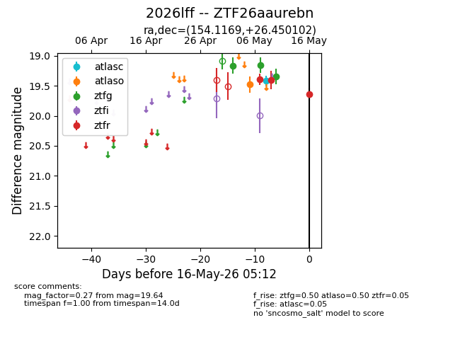
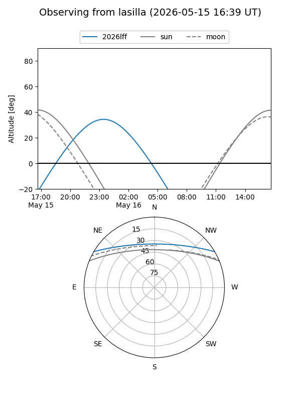
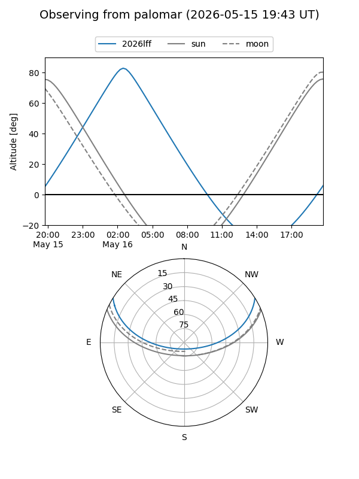
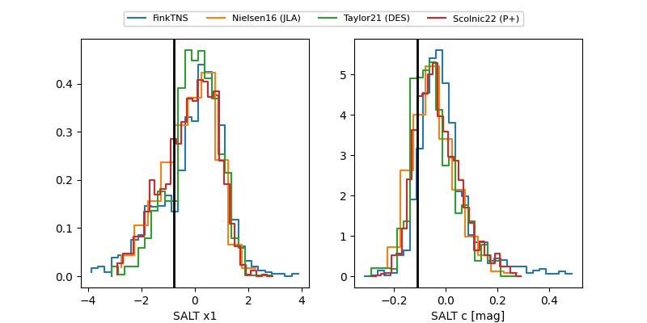

2026lff
Target 2026lff at 2026-05-16 05:14
Aliases and brokers:
FINK: link
Lasair: link
ALeRCE: link
TNS: link
YSE: link
alt names
ZTF26aaurebn (ztf,fink_ztf)
2026lff (tns,yse)
Coordinates:
equatorial (ra, dec) = 154.1169,+26.45010
equatorial (HMS+DMS) = 10:16:28.06,+26:27:00.37
galactic (l, b) = (205.0074,+55.54804)
Flags:
Photometry:
last atlasc=nan, atlaso=19.48, ztfg=19.34, ztfr=19.64
2 atlasc, 1 atlaso, 3 ztfg, 3 ztfr detections
Lightcurve

Visibility


Additional plots
